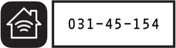

Before {{ accessory.name }} will accept anything from Homey, it requires that Homey sends the HomeKit Setup Code. This code is generally found on a sticker on the device, and looks something like this:

Please find the setup code for {{ accessory.name }} and enter it here: